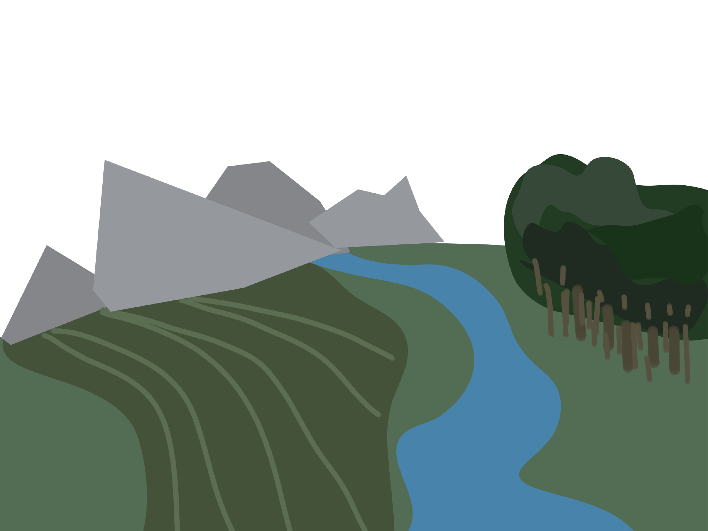

Jaki piękny spokojny widok. Z pozoru nie możemy tego dostrzec, ale ten widok tętni życiem. Ten mały skrawek ziemi pojmuje tyle żyjących istot, że nie moglibyśmy ich nigdy policzyć… To ile tych istot musi być dopiero na całej Ziemi?